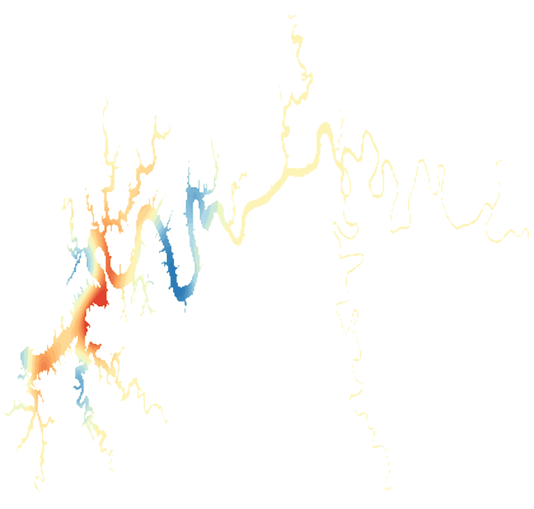

LakeScope › KY
Lake Cumberland today
Updated 2026-11-14 - Atlas Labs
Clear water, 63°F water, level falling, 2 ft below normal, calm this morning.
Water level
689.48 ft
U.S. Army Corps of Engineers - 2026-11-14
7-day trend: falling (-1.26 ft). Compared with normal for this date: -2.0 ft (same weeks, 2024-2025).
Water clarity and algae
Clear water Last clear view: about a week ago.
Surface temperature
63°F
seen from space on 2026-11-11

Ice
Open - 0% ice cover
Estimate from weather and satellite, not a measurement. Check the ice yourself before going on it.
Weather, next 3 days
| Day | Sky | High / low | Wind | Rain |
|---|---|---|---|---|
| Saturday | Patchy Fog then Mostly Sunny | 50 / 24°F | 7 mph NW | 0% |
| Sunday | Patchy Fog then Mostly Sunny | 54 / 24°F | 5 mph N | 0% |
| Monday | Patchy Fog then Sunny | 58 / 25°F | 3 mph NE | 0% |
Sunrise 06:17 - sunset 16:31 - Waxing crescent. National Weather Service.
Get the LakeScope app: alerts and the 3-D view of Lake Cumberland